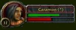
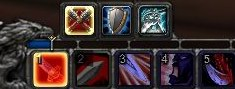
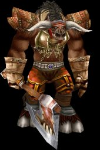

Воин (Warrior)
Воины - класс,
сосредоточенный на оружии ближнего боя. Они сильные и выносливые, а
так же мастера оружия и тактики. Специальные способности воина
ориентированы на бой. В отличие от воинов в других играх, в WoW у
воина множество различных умений и способностей, которые можно
использовать прямо в бою.
Преимущества:
1. Воин может носить любую броню и
использовать почти все виды оружия.
2. Воин выдерживает больше
повреждений, чем любой другой класс.
3. Обладает хорошими
навыками боя на близкой дистанции.
4. Большой выбор
обмундирования.
5. Легко расправляется с
монстрами
Недостатки:
1. Не имея навыков лечения,
полагается на еду, зелья восстановления и других игроков.
2.
Очень зависит от используемой брони и оружия.
Доступные
расы: человек, дварф, ночной эльф, гном, орк, таурен, нежить,
тролль
Стандартные бары: Здоровье/Гнев
Доступное
обмундирование: тряпичная одежда(Cloth), кожаные доспехи, кольчужные
доспехи(Mail), пластинчатые доспехи(Plate), щиты (Shields)
Доступное оружие: одноручные
и двуручные топоры(One and Two-Handed
Axes), мечи(Swords), молоты(Maces), а также кинжалы(Daggers) и метательное оружие(Thrown)
Гнев (Rage):
У воина
есть красный бар гнева(полоска, это подобно панели маны, у магов.).
Он набирается во время боя. Чем больше повреждений ты наносишь,
пропускаешь или предотвращаешь, тем больше набирается гнева. У воина
так же есть специальные способности, чтобы набирать гнев. Гнев
нужен, чтобы пользоваться способностями, недоступными вне боя.
Соответственно для каждой спец атаки нужно определённое кол-во
гнева. Если бой закончился, то гнев начинает сползать к 0. Так же
воин потеряет весь накопленный гнев, если поменяет стойку
боя.
Стойки (Stances):
 Воин имеет различные
стойки для ведения боя, они определят способности, которые будут
доступны в бою. Есть специальные кнопки, для переключения стоек.
Если вы переключите стойки во время боя, весь ваш накопленный гнев
улетучится. Обычно во время сражения нет необходимости переключать
стойки, так как все они предназначены для различных ситуаций. Battle
Stance (боевая стойка) используется главным образом для соло битв,
так как повышает уровень и скорость атаки. Defensive Stance
(защитная стойка) даёт меньшее кол-во навыков атаки, но даёт воину
большое кол-во защиты. Это прежде всего используется, если в группе
вам выпала роль "танка."
Панель спец. атак (Action
Bar):
Каждая стойка имеет свою собственную панель спец атак.
При переключении стойки меняется и панель спец
атак.
Связки ударов:
Использйуте Удар щитом(Shield Bash)/Блок щитом(Shield Block), а затем используйте навык
Месть(Revenge).
Тренировка
навыков оружия:
Очень полезно совершенствовать ваше владение
разными видами оружия, чтобы вы могли с лёгкостью переключиться на
другой тип оружия, если это оружие будет лучше вашего. Носите с
собой оружие разных типов (мечи, топоры, молоты и т.д.), время от
времени используйте их, чтобы повысить ваши навыки владения
ими.
Советы:
1. Объединяйтесь в группы с классами,
которые умеют лечить (Священник(Priest),
Шаман(Shaman), Друид(Druid), Паладин(Paladin)).
2. Научитесь пользоваться одним
или двумя типами навыков двуручного оружия.(к примеру, двуручные
топоры(Two-Handed Axes) и двуручные
мечи(Two-Handed Swords))
3. Учитесь
управлять своим Гневом(Rage)! Если сражаетесь с кастером, сберегайте
Гнев, для того чтобы в нужный момент вы смогли прервать его мощное
заклинание или заклинание лечения с помощью ваших навыков Удар
щитом(Shield Bash) или Сбить(Pummel). Один лишний Героический удар(Heroic Strike), конечно, нанесёт дополнительный
урон, но монстр сможет себя полечить и, можно сказать, битва
начнётся с начала.
4. Испытывайте и планируйте распределение
ваших талантов заранее. Если вы хотите сделать свирепого вблизи
воина с большим количеством очков здоровья (Hit
points), вы должны остановить свой выбор на параметре
выносливость(Stamina) и выбрать защитные
таланты. Если же вы решили стать атакующим бойцом, то старайтесь
увеличить параметр Сила(Strength) и
таланты специализации в оружии.
5. Защищайте ваших союзников в
группе. Священник(Priest) или Маг(Mage) не сможет выдержать нескольких атак
монстра, так что используйте ваши навыки Насмешка(Taunt), Вызывающий крик(Challenging Shout) или Дразнящий удар(Mocking Blow), чтобы заставить монстров
атаковать вас. 
Торговые навыки
Параметры воина
При создании
нового персонажа у игрока нет возможности выбрать начальные
параметры. Они будут зависить лишь от выбора расы и класса.
Strength (Сила)
- Добавляет силу атаки, увеличивает dps(повреждения в секунду). Сила
не влияет на шанс нанесения критических ударов. Сила не влияет на
шанс заблокировать удара, но влияет на поглощение урона во время
блока. Это величина частично зависит от силы, а частично от свойств
щита.
Agility (Ловкость) - Увеличивает шанс нанести
критический удар, влият на шанс уворота(dodge), а также от неё
напрямую зависит величина защиты(defense).
Stamina
(Выносливость) - Увеличивает жизнь персонажа(Health
points).
Intellect (Интеллект) - Интеллект влияет на шанс
повышения навыков ближнего боя (dodge, parry, block).
Spirit
(Дух) - Увеличивает скорость регенерации жизни. Этот параметр
также позволяет повысить навык владения определённым
оружием.
Боевые навыки воина
Боевые навыки
приобретаются у специальных тренеров за деньги. Каждый навык можете
купить лишь с определённого уровня. Также у большинства навыков есть
несколько рангов. С каждым рангом повышается эффект применения
навыка. Если у вас есть, к примеру, Heroic Strike 1-го ранга, то вы
не сможете приобрести Heroic Strike 3-го ранга, пока у вас не будет
данного навыка 2-го ранга. Также существует несколько навыков,
которые вы получаете в качестве награды за выполнение квеста или
получаете бесплатно при создании персонажа.